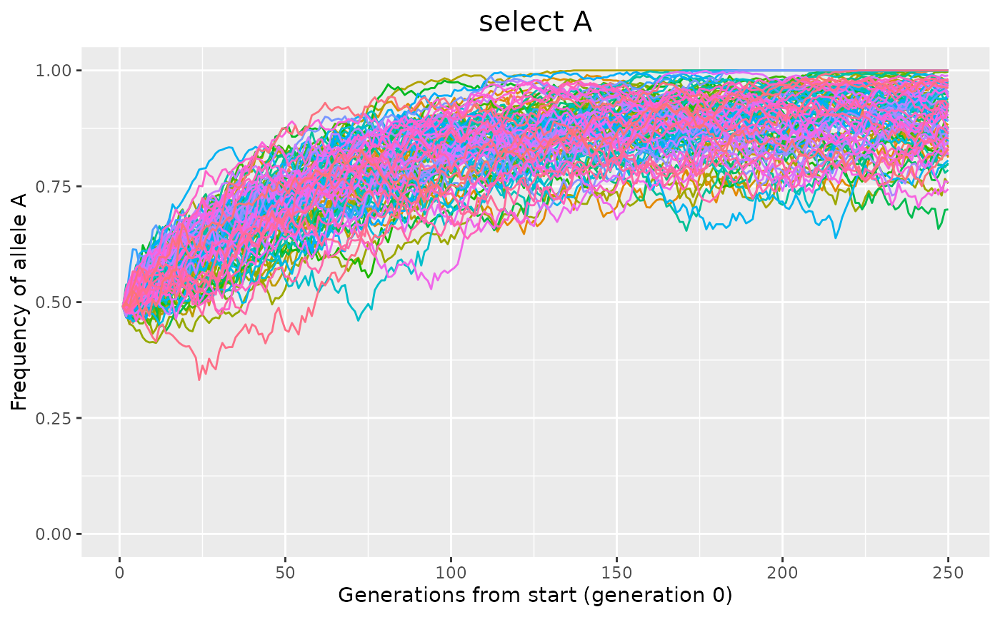

library(pgmcs)
suppressWarnings(RNGversion('3.5.2'))Web App
The package is very simple to use, all you need is a browser, like Chrome.
But if you can’t stand the low speed, and the unstable connection demanding frequent refresh, you may consider the following approach.
Run on your own computer
In this way, you can free from the above troubles. It’s very easy, you just need to install R, which is even simpler than QQ.
if (!('remotes' %in% .packages(T))) install.packages('remotes');
remotes::install_github('dongzhuoer/pgmcs');- open R and run the application
shiny::runApp(system.file('shiny/pgmcs', package = 'pgmcs'))
shiny::runApp(system.file('shiny/pgmcs2', package = 'pgmcs'))Command line interface
If you are familiar with R, you can get rid of the limit on population size and generation number, and try whatever parameters you like.
set.seed(0);
demo_population_simulation(100, 250, c(0, 490, 10), c(1, 1, 1), 'drift')
demo_population_simulation(100, 250, c(0, 490, 10), c(1, 1, 0.95), 'select A')
The following code reproduce the figures in 20.2 of Genetics From Genes to Genomes, 5th
Figure 20.8 at P671
Initial population are all heterozygotes.
set.seed(13);
demo_population_simulation(6, 30, c(0, 10, 0), c(1, 1, 1), "Small population: Lots of genetic drift");
set.seed(0);
demo_population_simulation(6, 30, c(0, 500, 0), c(1, 1, 1), "Large population: Little genetic drift");
Figure 20.13 at P676
499bb + 1Bb; WBB = 1.0, WBb = 1.0, Wbb = 0.98 (adjusted to 0.97)
set.seed(885); # 57
demo_population_simulation(6, 900, c(0, 1, 499), c(1,1,0.97), "Natural selection together with genetic
drift")